Spark and the Halloween Mix-Up
Costumes, curious clues, and one very puzzled little Spark. Watch the first animated preview, then explore four scenes from the upcoming Halloween special.
Swipe or scroll to preview all four scenes →
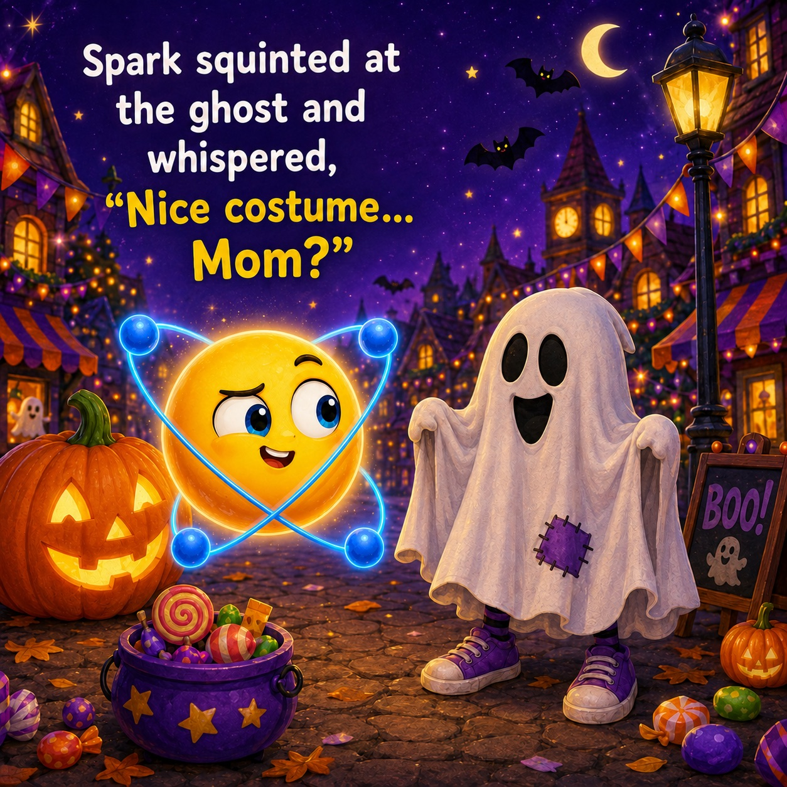
Browse 13 available books.
Every book shown below is available now. The Worry in My Backpack will be added when it is ready.
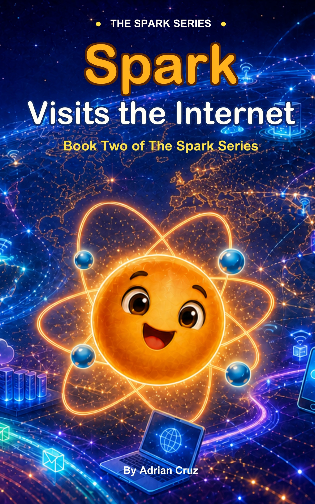
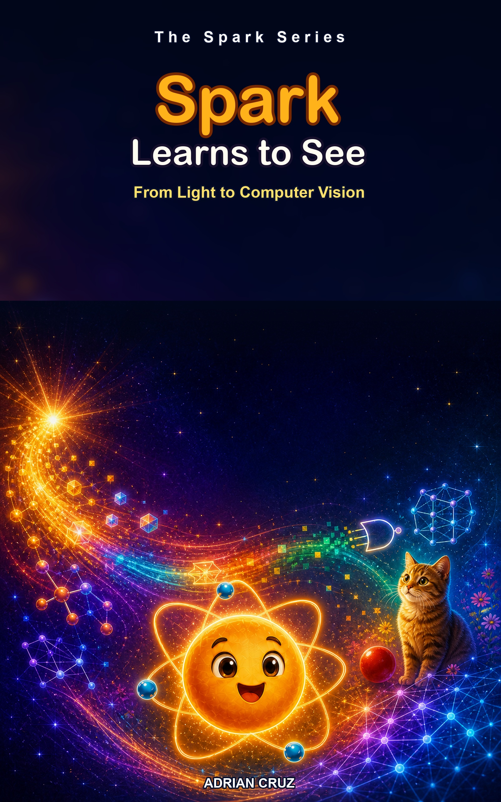
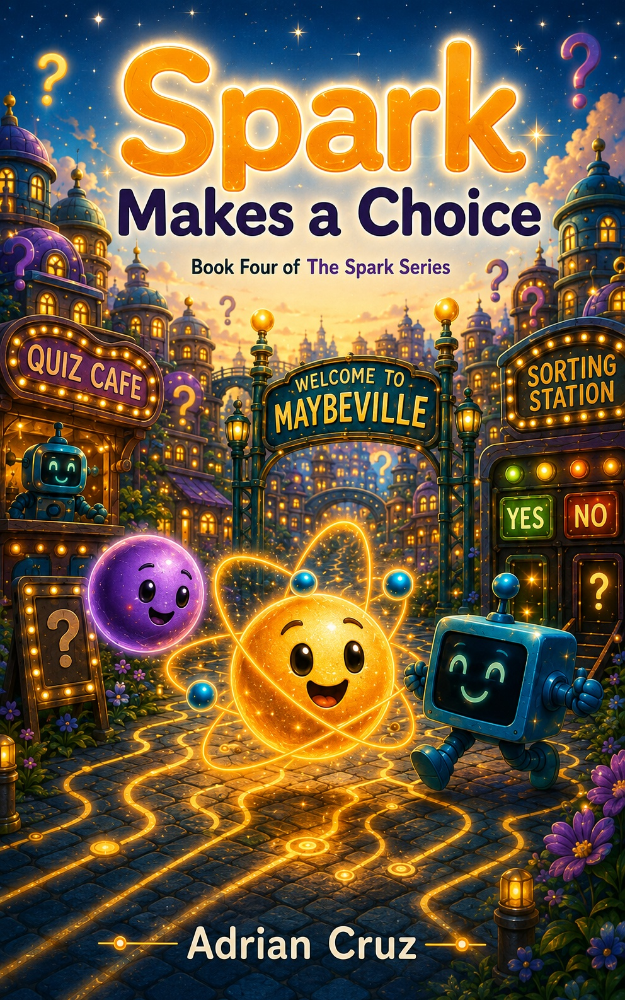
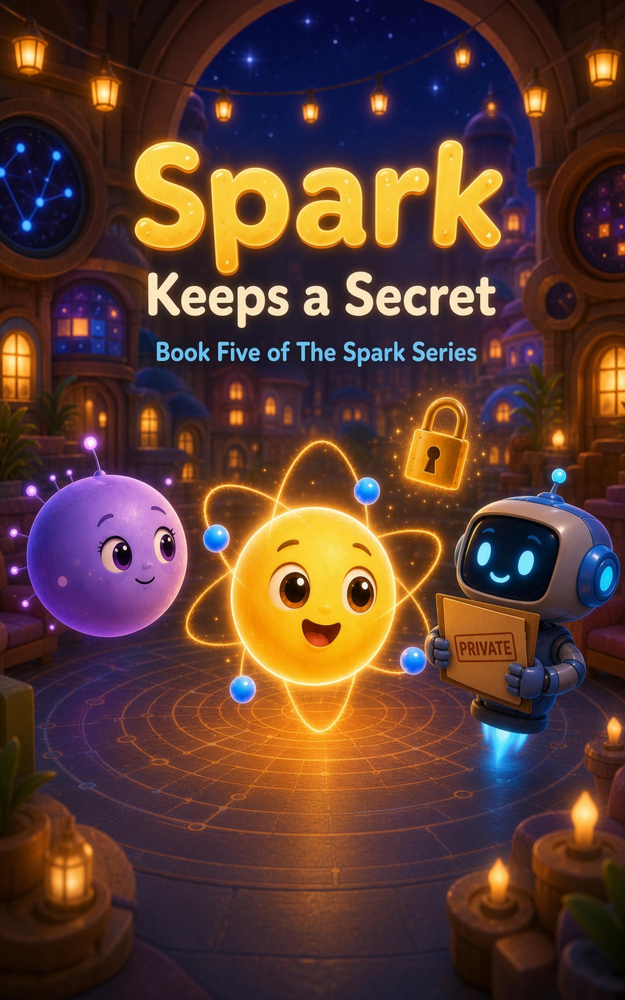
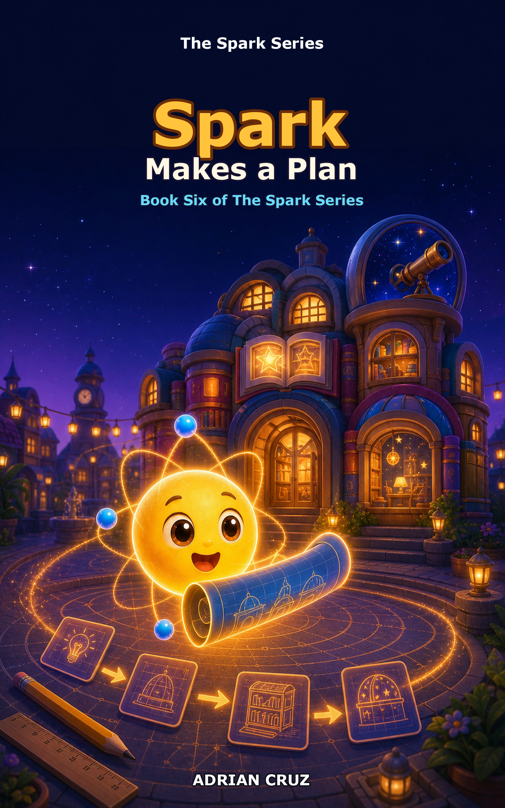
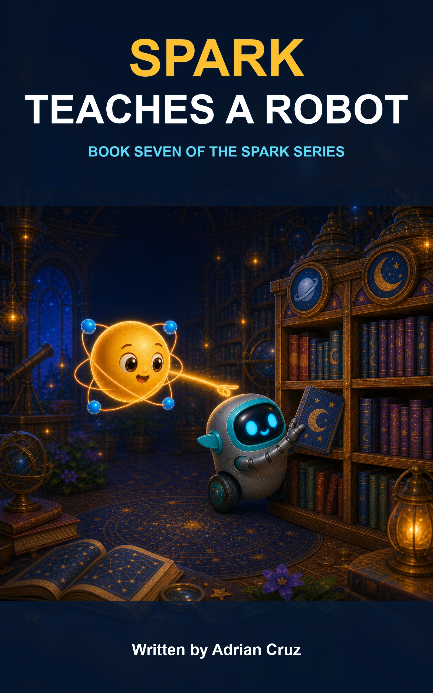
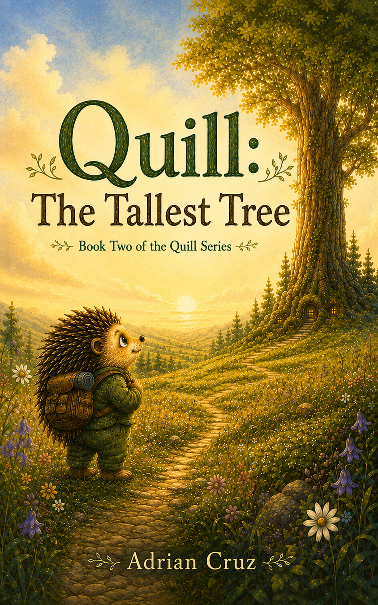
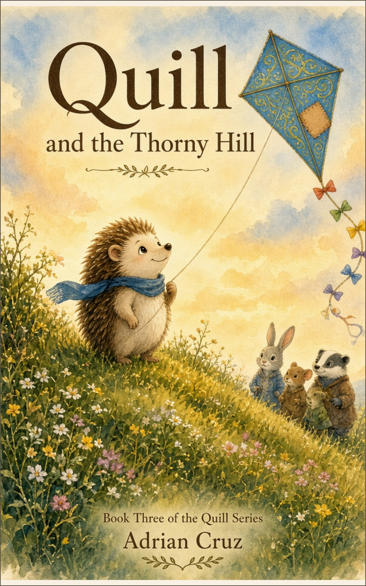
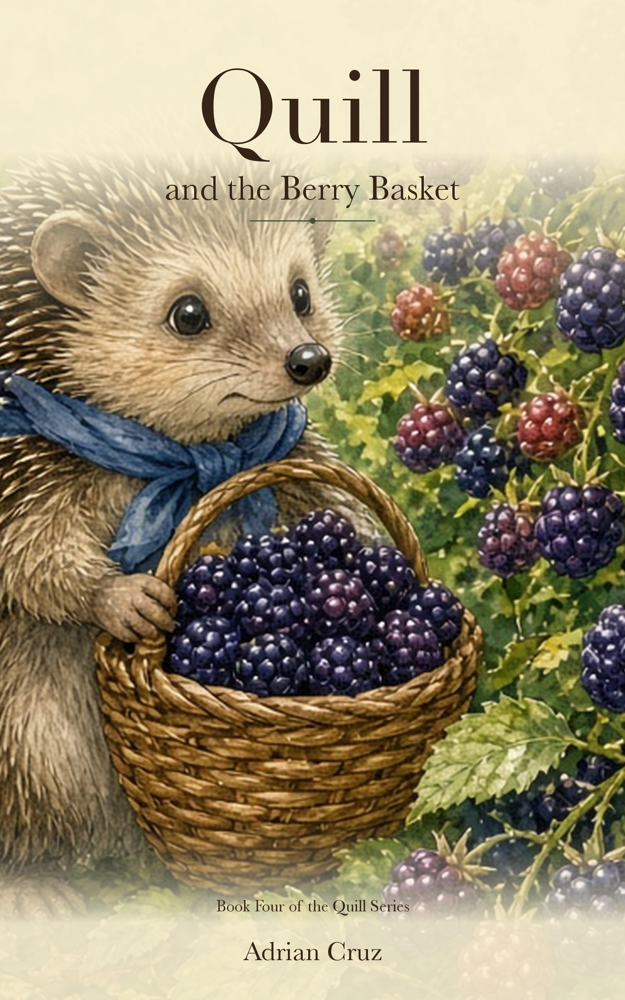
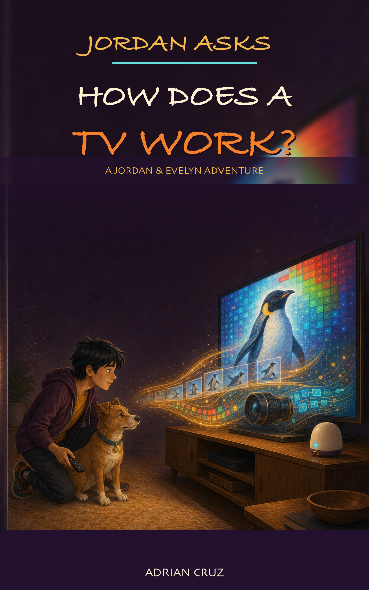
Four story worlds.
Technology adventures, cozy meadow stories, emotionally grounded read-alouds, and everyday questions, all under one author home base.
The Spark Series
Friendly stories that introduce computers, the internet, computer vision, choices, privacy, planning, and how robots learn.
The Quill Series
Warm meadow adventures about curiosity, courage, mistakes, friendship, and growing up.
The Worry Series
Gentle stories that help children recognize big feelings and give families a natural starting point for conversation.
Jordan Asks
Bright, approachable stories for children who want to know how the everyday world works.
Adrian Cruz
Adrian Cruz is an independent children's book author creating warm, imaginative stories for young readers and families. His work ranges from playful introductions to technology and artificial intelligence to character-driven stories about friendship, confidence, emotions, worry, and growing up.
Read the story. Keep the conversation going.
Whether the topic is technology, privacy, confidence, friendship, worry, or making a hard choice, these books are designed to give children a story first and a conversation worth continuing after the last page.